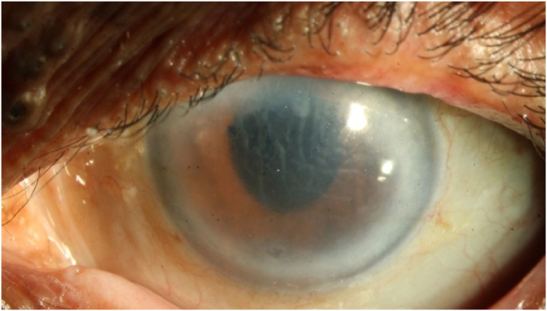
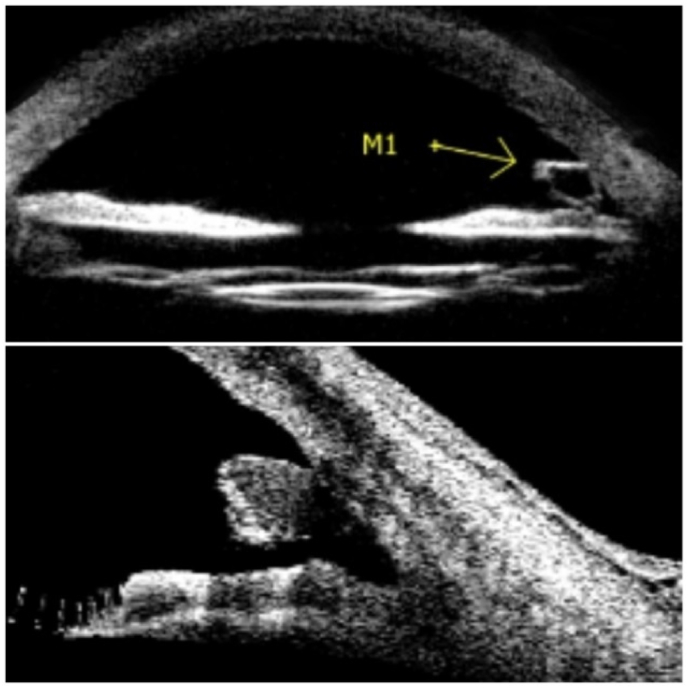
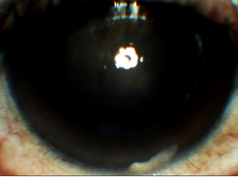
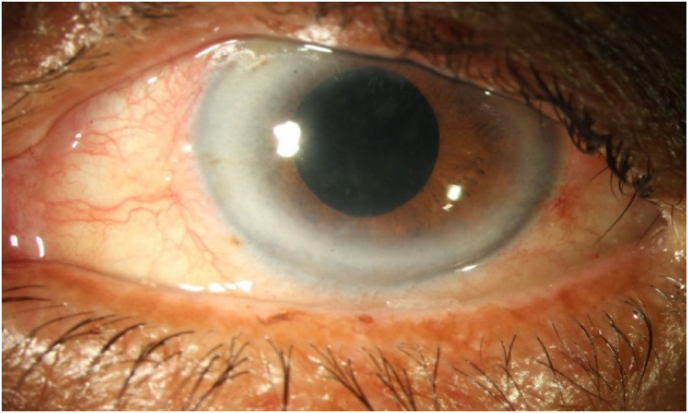
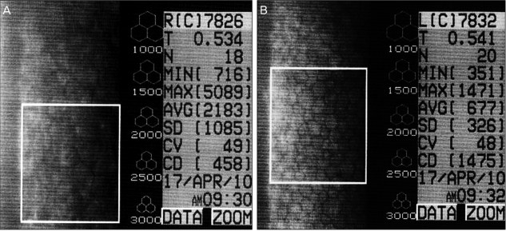

1442 — Mảnh thể thủy tinh còn sót trong tiền phòng / Retained lens fragment in the anterior chamber
Tags: pattern:phu-giac-mac pattern:vat-the-tien-phong pattern:viem-tien-phong pattern:mat-mot-ben pattern:giam-thi-luc vung:mat vung:giac-mac vung:tien-phong vung:goc-tien-phong vung:the-thuy-tinh protocol:slit-lamp protocol:AS-OCT protocol:UBM protocol:specular-microscopy score:ECD score:CCT incidentaloma:manh-the-thuy-tinh
Mức chắc chắn (certainty): tổng hợp y văn (literature synthesis) — 2 ca nguyên văn có ảnh và số liệu đầy đủ (1 ca 4 năm, 1 ca 15 năm sau phaco) + 1 ca thứ ba về mảnh IOL gập gây phù giác mạc muộn; toàn bộ là ca báo cáo, không có nghiên cứu đoàn hệ hay RCT cho thể tiền phòng (khác thể hậu đoạn, nơi đã có đoàn hệ lớn).
Vì sao bài này quan trọng: mảnh thể thủy tinh sót ở tiền phòng là biến chứng của phẫu thuật được làm nhiều nhất trên thế giới, nhưng xuất hiện muộn tới 4–15 năm và bắt chước đúng ba bệnh cảnh khác nhau: phù giác mạc giả thể thủy tinh (pseudophakic bullous keratopathy), viêm màng bồ đào tái diễn, và viêm nội nhãn (mảnh trắng ở góc dưới từng bị gọi là mủ tiền phòng/hypopyon — ca 2). Bệnh nhân vì thế được điều trị corticoid kéo dài hoặc được tư vấn ghép giác mạc trong khi nguyên nhân là một mảnh 1 mm có thể lấy ra bằng rửa tiền phòng. Bài 1428 phủ mảnh implant corticoid (hình thanh, đúng 6 mm); bài này phủ mảnh mô của chính mắt bệnh nhân — khác hình thái, khác thời điểm, khác xử trí.
1. Tổng quan bệnh học – cơ chế hình ảnh
- Vì sao mảnh thể thủy tinh TRẮNG và thấy được: thể thủy tinh là cấu trúc 65% nước, 35% protein (chủ yếu crystallin) — nồng độ protein cao nhất trong cơ thể, chiết suất ~1,40 so với thủy dịch ~1,33. Mảnh vụn giữ nguyên chiết suất cao → tán xạ ánh sáng mạnh ở khe sáng: một đốm/vệt trắng đục, không trong như mảnh vỏ mềm đã ngậm nước.
- Vì sao mảnh có thể NẰM YÊN nhiều năm rồi mới gây bệnh: khe hở giữa mống mắt và bao sau/thể thủy tinh nhân tạo (IOL) là một ngách kín; mảnh vụn bị mống mắt che hoặc nằm trong túi bao (capsular bag), không tiếp xúc nội mô → không triệu chứng. Khi đồng tử giãn/co theo ánh sáng, khi tư thế đầu thay đổi, hoặc khi dịch kính hóa lỏng làm mất giá đỡ, mảnh di chuyển ra tiền phòng và chìm xuống 6 giờ (mảnh đặc nặng hơn thủy dịch).
- Vì sao nằm ở góc dưới mà vẫn làm phù giác mạc LAN TỎA: mảnh dính vào nội mô ở góc dưới, tạo ổ viêm khu trú; đại thực bào và cytokin khuếch tán trong thủy dịch → phù lan tỏa dù tổn thương cơ học chỉ vài mm². Đây là lý do phù không tương xứng với kích thước mảnh (ca 1: mảnh 0,96 × 0,75 mm nhưng CDVA 20/200).
- Hai cơ chế phá nội mô, phải kể cả hai:
- Cơ học: mảnh cọ xát mặt sau giác mạc mỗi lần chớp/mắt chuyển động → chết tế bào nội mô tại chỗ. Nội mô không tái sinh; người trưởng thành có ECD ≈ 2.200–2.500 tế bào/mm² và mất ~0,6%/năm; tế bào còn lại to ra, mất hình lục giác để bù.
- Hóa–miễn dịch: protein thể thủy tinh là kháng nguyên "ẩn" (sequestered antigen). Rò rỉ ra tiền phòng → viêm do protein thể thủy tinh (phacoantigenic/phacolytic): đại thực bào ngấm protein, phản ứng u hạt, tế bào + flare, có thể tạo giả mủ — chính vì thế ca 2 từng bị chẩn đoán hypopyon ở tuyến trước.
- Số liệu định lượng cốt lõi (lấy từ nguồn của bài):
- Ca 1 (AJO Case Rep 2022, PMC8844397): nữ 65 tuổi, phaco 4 năm trước, mờ mắt 4 tháng, CDVA 20/200, IOP 14 mmHg, nếp Descemet, đã được chẩn đoán phù giác mạc giả thể thủy tinh và tư vấn ghép giác mạc lát mỏng; UBM + AS-OCT phát hiện mảnh 0,96 × 0,75 mm ở 6 giờ, dính nội mô; rửa tiền phòng → giác mạc trong hoàn toàn sau 3 tháng, CDVA 20/40. Soi nội mô không làm được vì giác mạc phù.
- Ca 2 (Korean J Ophthalmol 2011, PMC3039198): nam 60 tuổi, phaco 15 năm trước, viêm tiền phòng tái diễn, VA 0,2 (mắt bên 0,9), IOP 15/17 mmHg, flare độ 1, tế bào độ 2, mảnh trắng ở góc dưới bị đọc là mủ tiền phòng; sau giãn đồng tử thấy thêm mảnh trong bao trên; lấy mảnh bằng forceps + viscoelastic; 2 tháng: VA 0,7 nhưng ECD chỉ còn 458 tế bào/mm² và mất tính lục giác — tức mất ~80% dự trữ nội mô (suy luận từ mốc 2.200–2.500 tế bào/mm²).
- Ca 3 (Indian J Ophthalmol 2009, PMC2683446): 65 tuổi, phaco + IOL gập (Rayner Centerflex 570C +21D); một haptic (tay đỡ) của IOL gãy ở chỗ nối optic–haptic, IOL lệch phải đổi 10 ngày sau; 2 tuần sau phù giác mạc, thấy haptic sót ở góc tiền phòng dưới, lấy ra → phù hết hoàn toàn. Bài học: "mảnh" không chỉ là nhân/cortex mà có thể là mảnh vật liệu IOL (suy luận: bờ nhẵn, ít tán xạ hơn nhân nên dễ bị đọc là "mảnh vỏ mềm").
- Mốc thời gian thực hành: diễn tiến trong nguồn từ 4 tháng đến 15 năm sau mổ; phù hồi phục 1–3 tháng sau khi lấy mảnh nếu nội mô còn dự trữ.
2. Mẫu hình + chẩn đoán phân biệt theo vị trí (Gamut)
Mẫu hình chốt: mắt MỘT BÊN, đã phaco + IOL nhiều năm, mờ mắt từ từ hoặc viêm tiền phòng tái diễn, giác mạc phù + nếp Descemet, IOP thường KHÔNG cao, soi góc thấy mảnh trắng bờ nham nhở, kích thước dưới 1–2 mm, ở 6 giờ, dính nội mô và không di động khi nghiêng đầu.
- Gamut "vật trắng trong tiền phòng ở mắt giả thể thủy tinh":
- Mảnh thể thủy tinh (nhân cứng) — bờ nham nhở, vỡ góc cạnh, kích thước 0,5–2 mm, ở góc dưới.
- Mảnh vỏ mềm (cortical material) — trắng xốp, mờ, rìa mỏng, thường tự tiêu trong vài tuần.
- Vòng Soemmering — vòng liên tục sau mống mắt, trung tâm, cố định.
- Implant dexamethasone lạc — thanh 6 × 0,46 mm, hai đầu bo tròn (bài 1428).
- Mủ tiền phòng thật (TASS/viêm nội nhãn) — mủ lắng thành lớp ngang, di động theo tư thế, kèm đau, IOP thay đổi, phản ứng mạnh.
- Mảnh ghép nội mô bong (DSAEK/DMEK) — mảnh hình đĩa, mép cuộn, sát nội mô, sau ghép.
- Giọt dầu silicon — hình cầu trong, khúc xạ, không trắng đục.
- Canxi hóa IOL — đốm trắng trong thân IOL, không di động, không ở góc.
- Gamut "phù giác mạc MỘT BÊN ở mắt đã mổ" (theo thứ tự cần loại): mảnh thể thủy tinh sót; mất bù nội mô do mổ (pseudophakic bullous keratopathy thật); tăng nhãn áp do corticoid (bài 1411); viêm nội mô do HSV/CMV; góc đóng cấp; bong mảnh ghép nội mô; hội chứng UGH; dầu silicon tiền phòng (bài 1410).
- Ba câu hỏi lâm sàng (thay mnemonic): (1) Mổ phaco cách đây bao lâu (4 tháng hay 15 năm đều được)? (2) Phù có kèm viêm tiền phòng tái diễn và IOP bình thường không? (3) Có mảnh < 2 mm bờ nham nhở ở 6 giờ, dính nội mô, không di động? — "có" cả 3 → mảnh thể thủy tinh sót cho tới khi chứng minh ngược.

- Ảnh: mắt trái, phù mô đệm lan tỏa với nếp Descemet; bệnh nhân đã được chẩn đoán "phù giác mạc giả thể thủy tinh" và tư vấn ghép giác mạc trước khi chụp UBM/AS-OCT. Nguồn Am J Ophthalmol Case Rep 2022 (PMC8844397), CC BY-NC-ND 4.0, nguyên bản.
3. Bảng so sánh phân biệt (ma trận đối chiếu)
| Thực thể (entity) | Hình ảnh điển hình | Chốt vào (rule-in) | Chốt loại (rule-out) | Gợi ý xác nhận |
|---|---|---|---|---|
| Mảnh thể thủy tinh (nhân) sót tiền phòng | Mảnh trắng đục bờ nham nhở, 0,5–2 mm, ở góc dưới (6 giờ), dính nội mô; UBM/AS-OCT thấy cấu trúc đặc nằm sát mặt sau giác mạc | Tiền sử phaco nhiều năm + mảnh đặc, kích thước < 2 mm, đúng 6 giờ + phù giác mạc/viêm tiền phòng một bên, IOP bình thường | Không có tiền sử mổ nội nhãn; mảnh di động như mủ, hoặc thanh đều 6 mm → loại | Đèn khe + soi góc; UBM 35–50 MHz; AS-OCT đo khoảng cách mảnh–nội mô |
| Mảnh vỏ mềm (cortical) | Trắng xốp, mờ như bông, rìa mỏng, thường vài ngày–vài tuần sau mổ | Mới mổ < 1 tháng, mảnh mềm, tan dần | Mảnh đặc, tồn tại nhiều năm, bờ vỡ góc cạnh → loại | Theo dõi 2–4 tuần; siêu âm sinh học nếu cần |
| Vòng Soemmering | Vòng trắng liên tục sau mống mắt, trung tâm, cố định | Dạng vòng, không ở góc, không di động | Rời rạc, ở góc dưới → loại | Giãn đồng tử + retroillumination |
| Implant corticoid lạc | Thanh 6 × 0,46 mm, hai đầu bo tròn, góc dưới, kèm phù vùng dưới | Tiêm nội dịch kính ≤ 4 tuần, đúng kích thước 6 mm | Bờ nham nhở, kích thước < 2 mm → loại | Đèn khe + B-scan loại implant trong dịch kính |
| Mủ tiền phòng (TASS/viêm nội nhãn) | Lớp mủ lắng ngang, đổi theo tư thế, tiền phòng đục | Đau, 24–48 giờ sau mổ, phản ứng tiền phòng mạnh, giảm thị lực nhanh | Mảnh khu trú không di động, không đau, kéo dài nhiều năm → loại | Cấy thủy dịch; không chọc mù khi nghi mảnh |
| Phù giác mạc giả thể thủy tinh "thuần" | Phù lan tỏa, không có vật thể trong tiền phòng | Mất nội mô do mổ, không mảnh | Thấy mảnh ở 6 giờ trên UBM/AS-OCT → loại | UBM/AS-OCT trước khi đặt lịch ghép giác mạc |
| Mảnh ghép DSAEK/DMEK bong | Mảnh hình đĩa, mép cuộn, sát nội mô | Sau ghép nội mô, hình đĩa | Mảnh nhỏ bờ nham nhở → loại | AS-OCT thấy mảnh ghép tách khỏi mặt sau giác mạc |
| Giọt dầu silicon | Hình cầu trong, khúc xạ, thường nổi góc trên | Tiền sử bơm dầu, mặt phân cách dầu–nước | Mảnh trắng đục, lắng góc dưới → loại | Đèn khe; soi đáy |
- Ảnh then chốt: UBM (trên) và AS-OCT (dưới) cho thấy mảnh đặc nằm ở góc dưới, dính vào nội mô — đây là bằng chứng quyết định, vì soi góc bằng đèn khe bị che bởi arcus giác mạc dày ở chính ca này.

- Ảnh: UBM ABsolu (Quantel Medical) và AS-OCT Visante (Carl Zeiss); mũi tên M1 chỉ mảnh; mặt cắt dọc qua tiền phòng thấy mảnh nằm sát mặt sau giác mạc. Nguồn Am J Ophthalmol Case Rep 2022 (PMC8844397), CC BY-NC-ND 4.0, nguyên bản.
4. Protocol chụp + hệ phân độ/điểm chuẩn hóa
Đánh giá ban đầu (làm trước mọi chẩn đoán hình ảnh):
- Đèn khe: đếm tế bào/flare, tìm nếp Descemet, đo CCT bằng pachymetry, giãn đồng tử rồi soi toàn bộ 360° góc tiền phòng; ghi vị trí theo giờ, kích thước (mm), có dính nội mô hay không, có di động theo tư thế hay không.
- Đo IOP ở mọi lần khám: thể tiền phòng thường IOP bình thường (ca 1: 14 mmHg; ca 2: 15 mmHg) — IOP bình thường KHÔNG loại trừ.
Chẩn đoán hình ảnh (khi soi góc không thấy hoặc giác mạc đục):
- UBM (ultrasound biomicroscopy, 35–50 MHz): đầu dò đặt trên củng mạc/giác mạc, xuyên qua arcus, sẹo, mống mắt; thấy mảnh tăng hồi âm kèm bóng lửng và đo được khoảng cách mảnh–nội mô. Ưu thế khi giác mạc đục (đúng ca 1).
- AS-OCT (anterior segment OCT): phân giải cao, không tiếp xúc, đo CCT và vị trí mảnh trong góc; hạn chế khi arcus dày hoặc giác mạc phù nặng (tín hiệu yếu).
- B-scan (10 MHz): chỉ để loại mảnh/implant trong buồng dịch kính và bong võng mạc — không dùng để đánh giá góc.
- Soi nội mô (specular microscopy): chỉ đáng tin khi giác mạc còn trong; ca 1 và ca 2 đều không đo được lúc vào viện. Đo sau khi lấy mảnh và hết phù để tiên lượng (ca 2: 458 tế bào/mm²).
- Không cần CT/MRI: mảnh thể thủy tinh không cản quang, CT/MRI không có giá trị — đừng làm chậm xử trí.
Ngưỡng định lượng dùng để quyết định:
- Kích thước: mảnh ≥ 1 mm hoặc dính nội mô → lấy; mảnh vỏ mềm < 1 mm, không viêm, không dính → theo dõi (kinh điển, không có thang riêng cho thể tiền phòng).
- CCT: bình thường 540 ± 30 µm; > 700 µm = phù nặng, nguy cơ bọng nước biểu mô.
- ECD: < 1.000 tế bào/mm² sau khi hết viêm = không còn dự trữ, phù sẽ không hồi phục hoàn toàn dù đã lấy mảnh (ca 2 còn 458 — phù hết nhưng giác mạc mỏng dự trữ).
- Không có hệ phân độ chính thức cho mảnh thể thủy tinh tiền phòng; mô tả theo 3 trục: kích thước (mm) × vị trí (giờ/góc) × có dính nội mô hay không.
flowchart TD
A[Phù giác mạc MOT BEN + tiền sử phaco] --> B{Soi góc thấy mảnh dưới 2 mm?}
B -->|Có| C[Đo kích thước + khoảng cách tới nội mô bằng UBM/AS-OCT]
B -->|Không| D[UBM + AS-OCT tìm mảnh ẩn sau mống mắt]
D --> E{Thấy mảnh đặc dính nội mô?}
E -->|Có| C
E -->|Không| F[Tìm nguyên nhân khác: corticoid, HSV, góc đóng, mảnh ghép bong]
C --> G{Mảnh ≥ 1 mm hoặc dính nội mô hoặc có viêm?}
G -->|Có| H[Rửa tiền phòng / lấy mảnh bằng viscoelastic + forceps]
G -->|Không| I[Theo dõi 4-6 tuần: CCT + tế bào tiền phòng]
H --> J[Theo dõi 1-3 tháng: CCT, ECD, thị lực]
I --> J
J --> K{ECD sau 3 tháng dưới 1000?}
K -->|Có| L[Tư vấn ghép nội mô DSAEK/DMEK]
K -->|Không| M[Theo dõi 6-12 tháng]
- Kỹ thuật lấy mảnh: đường vào rìa giác mạc, bơm viscoelastic để tách mảnh khỏi nội mô (bảo vệ nội mô + mở khoang thao tác), lấy bằng forceps thể thủy tinh hoặc I/A (ca 1 chỉ cần rửa tiền phòng; ca 2 dùng Healon 5 + forceps). Không hút bằng kim nhỏ xuyên giác mạc trung tâm.
- Sau mổ: corticoid tại chỗ giảm liều, cycloplegic nếu còn viêm; hẹn 1 tuần, 1 tháng, 3 tháng; đo ECD khi giác mạc đã trong.
5. Biến thể bình thường và cạm bẫy
- Arcus giác mạc (arcus senilis) che mất góc: đúng ca 1 — mảnh không thấy trên đèn khe và soi góc, và không di động. Bài học: phù giác mạc không rõ nguyên nhân ở mắt giả thể thủy tinh = chỉ định UBM/AS-OCT, không phải chỉnh liều corticoid.
- "Mủ tiền phòng" giả: mảnh trắng ở góc dưới bị đọc là hypopyon (ca 2) → nếu điều trị như viêm nội nhãn bằng kháng sinh/corticoid, mảnh vẫn còn và nội mô tiếp tục mất.
- Nhãn "phù giác mạc giả thể thủy tinh" là chẩn đoán LOẠI TRỪ: ca 1 đã được tư vấn ghép giác mạc trước khi chụp UBM. Ở mọi phù giác mạc một bên sau phaco, phải loại mảnh thể thủy tinh, tăng nhãn áp do corticoid, và viêm nội mô trước khi đặt lịch ghép.
- IOP bình thường không loại trừ: cả hai ca đều 14–15 mmHg; thể tiền phòng không gây tăng nhãn áp như phacolytic glaucoma (thể tăng áp thường gặp khi đục thể thủy tinh quá chín, khác bệnh cảnh này).
- Soi nội mô lúc giác mạc phù cho số sai: đừng dùng ECD đo trong lúc phù để quyết định ghép — số thấp giả hoặc không đo được (cả 2 ca).
- Mảnh có thể là vật liệu IOL, không phải nhân: ca 3 (Indian J Ophthalmol 2009) là mảnh IOL gập — bờ nhẵn, trong hơn, khó thấy; hỏi lại loại IOL đã cấy và xem mô tả mảnh trong biên bản mổ.
- Bẫy "thỏa mãn tìm kiếm": thấy mảnh rồi dừng → bỏ sót tăng nhãn áp do corticoid, bong võng mạc, phù hoàng điểm cùng mắt.
- Đừng chờ "mảnh tự tiêu": mảnh vỏ mềm có thể tiêu; nhân đặc thì không — và mỗi tuần chờ là mỗi tuần mất nội mô không hồi phục.
6. Tự lượng giá — Blind Quiz ngay trên trang tĩnh
Ca 1 — nữ 65 tuổi, mờ mắt trái 4 tháng, phaco 4 năm trước
- Bối cảnh: mổ phaco + IOL đặt trong bao 4 năm trước, không biến chứng. Nay CDVA 20/200, IOP 14 mmHg, giác mạc phù, nếp Descemet; đã được chẩn đoán "phù giác mạc giả thể thủy tinh" và tư vấn ghép giác mạc.
- Câu hỏi: (1) Vì sao soi nội mô và soi góc không cho chẩn đoán? (2) Ba chẩn đoán phân biệt? (3) Chọn hai thăm khám hình ảnh nào để tìm nguyên nhân, và vì sao không dùng CT?
Bấm để hiện đáp án (findings + chẩn đoán)
- Dấu hiệu: giác mạc phù lan tỏa với nếp Descemet; soi góc bị arcus dày che; soi nội mô không thực hiện được.
- Chẩn đoán: mảnh thể thủy tinh 0,96 × 0,75 mm ở 6 giờ, dính nội mô, phát hiện bằng UBM + AS-OCT; IOL đúng trong bao kèm vòng Soemmering.
- Vì sao không CT: mảnh thể thủy tinh không cản quang, không có tín hiệu MRI — CT/MRI chỉ làm chậm xử trí.
- Xử trí: rửa tiền phòng (I/A); 3 tháng sau: giác mạc trong hoàn toàn, CDVA 20/40.
- Nguồn ảnh: Am J Ophthalmol Case Rep 2022 (PMC8844397), CC BY-NC-ND 4.0, nguyên bản.
Ca 2 — nam 60 tuổi, viêm tiền phòng tái diễn, phaco 15 năm trước

- Bối cảnh: VA 0,2 mắt phải, IOP 15 mmHg, flare độ 1, tế bào độ 2, phù giác mạc nặng; tuyến trước đã chẩn đoán mủ tiền phòng và điều trị corticoid toàn thân nhưng nặng lên.
- Câu hỏi: (1) Vì sao "mủ" này không phải mủ? (2) Dấu hiệu nào trên khám giúp đổi chẩn đoán? (3) Tiên lượng thị lực và nội mô?
Bấm để hiện đáp án (findings + chẩn đoán)
- Dấu hiệu: mảnh trắng bờ nham nhở ở góc dưới; sau giãn đồng tử còn thấy mảnh thứ hai trong bao trên — hai mảnh giải thích viêm tái diễn.
- Chẩn đoán: mảnh thể thủy tinh còn sót gây viêm tiền phòng do protein thể thủy tinh + phù giác mạc; "mủ" là ngưng tụ protein/đại thực bào, không phải mủ nhiễm khuẩn (không đau, không di động).
- Xử trí: lấy mảnh bằng viscoelastic + forceps thể thủy tinh; 1 tháng VA 0,4, 2 tháng VA 0,7; ECD 458 tế bào/mm², mất tính lục giác.
- Tiên lượng: thị lực hồi phục nhưng nội mô đã mất phần lớn dự trữ — cần theo dõi dài hạn, tránh mọi tổn thương nội mô thêm (phaco mắt bên, corticoid kéo dài).
- Nguồn ảnh: Korean J Ophthalmol 2011 (PMC3039198), CC BY-NC 3.0, nguyên bản.
Ca 3 — câu hỏi quyết định (không cần ảnh)
- Bối cảnh: bệnh nhân đã lấy mảnh 2 tháng, giác mạc còn phù nhẹ, CCT 640 µm, ECD 700 tế bào/mm², CDVA 20/60, không đau.
- Câu hỏi: Tiếp tục theo dõi hay ghép nội mô? Vì sao?
Bấm để hiện đáp án
- Ghép nội mô (DSAEK/DMEK) là hợp lý: ECD 700 tế bào/mm² nằm dưới ngưỡng 1.000 — nghĩa là không còn dự trữ; nội mô không tái sinh, nên chờ thêm không tạo thêm tế bào. Ca 2 là ví dụ ngược: phù hết nhưng ECD 458 — vẫn phải theo dõi sát.
- Phản biện: nếu CCT < 600 µm, giác mạc trong, ECD > 1.000, có thể theo dõi thêm 3 tháng vì phù sau viêm có thể hồi phục một phần.
Ảnh minh họa thêm — hồi phục sau lấy mảnh

- Ảnh: cùng mắt ca 1, 3 tháng sau rửa tiền phòng; phù và nếp Descemet hết hoàn toàn. Nguồn Am J Ophthalmol Case Rep 2022 (PMC8844397), CC BY-NC-ND 4.0, nguyên bản.
Ảnh minh họa thêm — dự trữ nội mô sau khi hết phù

- Ảnh: 2 tháng sau lấy mảnh (ca 2), ECD 458 tế bào/mm², mất tính lục giác; mắt bên (B) để so sánh. Nguồn Korean J Ophthalmol 2011 (PMC3039198), CC BY-NC 3.0, nguyên bản.
Bài liên quan chéo
- 1428 – Phù giác mạc mất bù sau implant corticoid lạc tiền phòng — cùng gamut "vật trắng trong tiền phòng", khác hình thái (thanh 6 mm vs mảnh < 2 mm) và khác xử trí.
- 1411 – Tăng nhãn áp do corticoid nội nhãn — biến cố thường đi kèm vì bệnh nhân hay được dùng corticoid kéo dài cho "viêm không rõ nguyên nhân".
- 1410 – Lấy dầu silicone và dầu tồn lưu — vật liệu nội nhãn khác gây phù giác mạc một bên.
- 420 – Vỡ sàn hốc mắt & hội chứng khoang — tiếp cận chấn thương mắt có phù/giảm thị lực cấp.
- 411 – Siêu âm nhãn cầu — kỹ thuật B-scan dùng để loại mảnh trong buồng dịch kính.
Ảnh
images/1442_manh-the-thuy-tinh_SlitLamp_PMC8844397-Fig1-CCBYNCND.jpg— phù giác mạc + nếp Descemet, CC BY-NC-ND 4.0.images/1442_manh-the-thuy-tinh_UBM-ASOCT_PMC8844397-Fig2-CCBYNCND.jpg— UBM + AS-OCT, mảnh ở 6 giờ, CC BY-NC-ND 4.0.images/1442_manh-the-thuy-tinh_SlitLamp_PMC8844397-Fig3-CCBYNCND.jpg— hồi phục 3 tháng, CC BY-NC-ND 4.0.images/1442_manh-the-thuy-tinh_SlitLamp_PMC3039198-Fig1-CCBYNC.jpg— mảnh ở góc dưới, CC BY-NC 3.0.images/1442_manh-the-thuy-tinh_Pachymetry_PMC3039198-Fig3-CCBYNC.jpg— soi nội mô ECD 458, CC BY-NC 3.0.- Chi tiết nguồn/giấy phép từng ảnh:
images/CREDITS.md.
Không dùng để chẩn đoán độc lập khi chưa có người hướng dẫn.